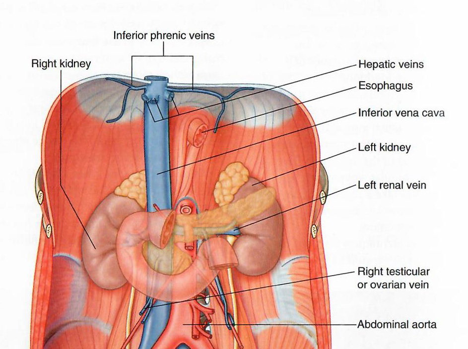

Stomach, Liver, Spleen: Module 2 - Page 2 of 7
|  |
| Click on image to enlarge |
| Add the hepatic veins. |
The hepatic veins drain the liver into the inferior vena cava.
Do you notice something different in our cadaver from the standard drawings of the hepatic veins? |
|
|
Our cadaver has auxillary veins that empty the left lobe of the liver. |
|
| Add the hepatic portal veins. |
Notice the relationship of the hepatic portal veins and the hepatic veins.
| This relationship would be helped by the addition of the liver. |
The hepatic portal vein enters the liver at the porta hepatis. Porta in latin is a door or entry.
What other structures pass through the porta hepatis? |
|
|
The hepatic arteries and the bile ducts. |
|